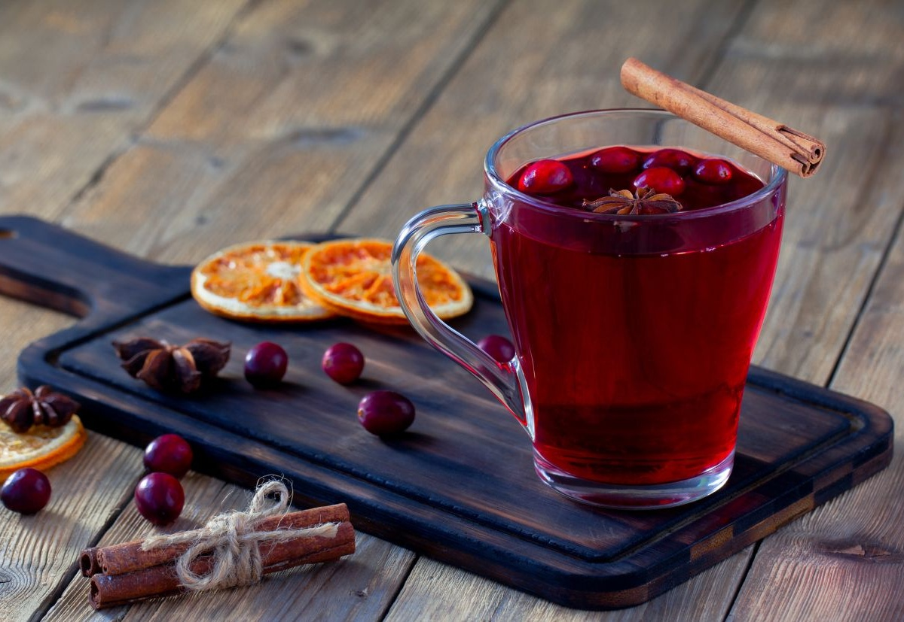

Клюквенный морс

- клюква ~500 г
- имбирь (примерно как 2 больших пальца)
- бадьян — 3–4 звёздочки
- апельсины — 2 шт
- корица — 2 палочки
- мёд
В кастрюлю выложить 500 г клюквы. Очистить и крупно нарезать имбирь (кусок размером примерно с два больших пальца) и добавить к клюкве. Добавить 3–4 звёздочки бадьяна, положить 2 палочки корицы. Выжать сок из 2 апельсинов и влить в кастрюлю. Поставить кастрюлю на средний огонь, накрыть крышкой и варить около 15 минут, пока вся клюква не полопается. Во время варки ягоды будут активно «взрываться», почти как салют — это нормально.
Снять с огня, дать настояться около 30 минут и остыть. Добавить мёд по вкусу.
 Назад к списку рецептов
Назад к списку рецептов